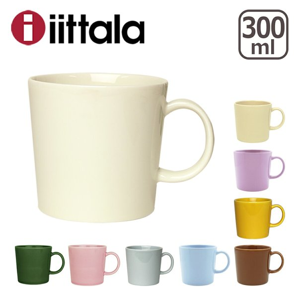
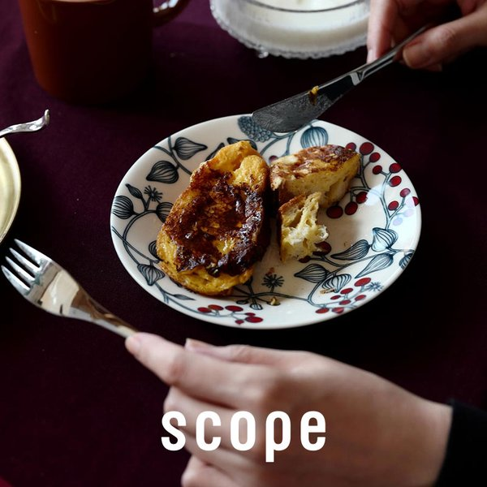
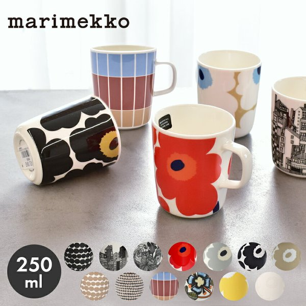
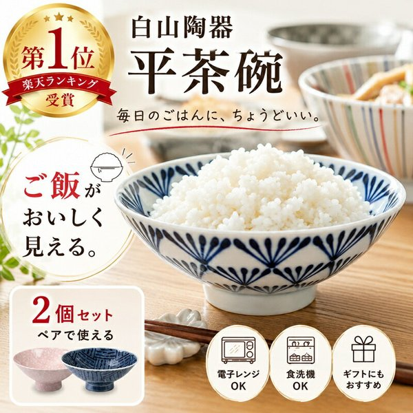
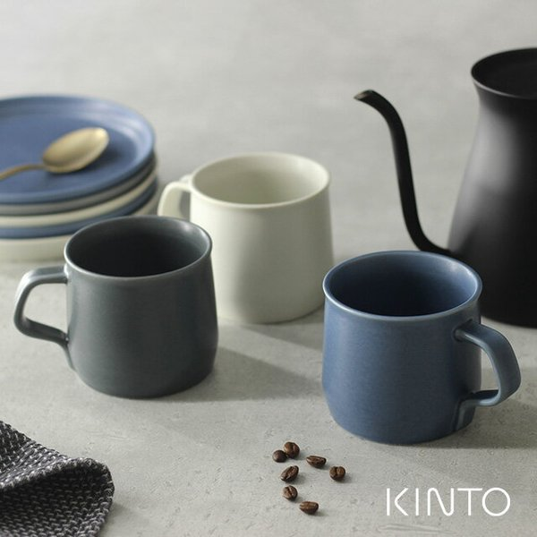
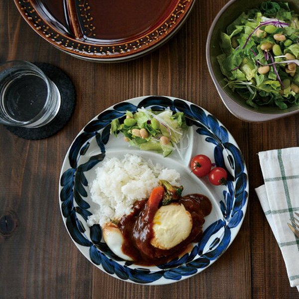
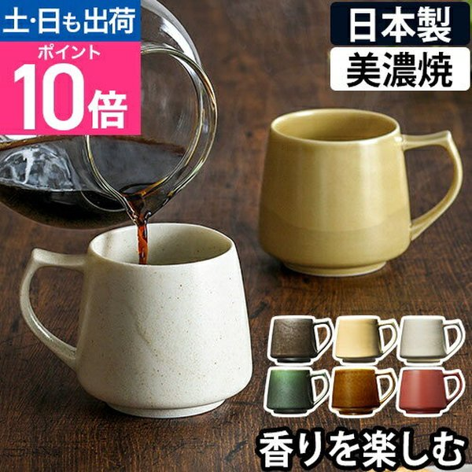
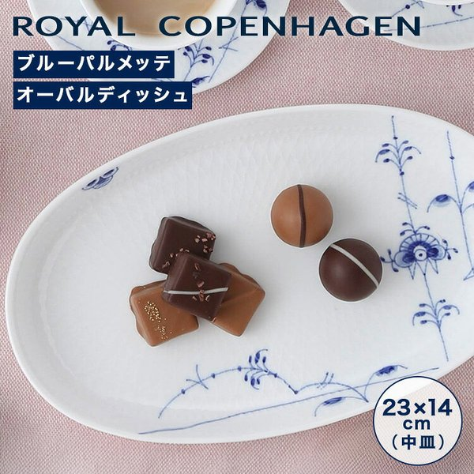
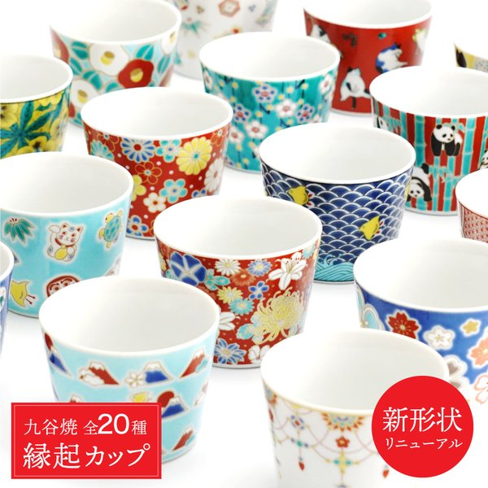
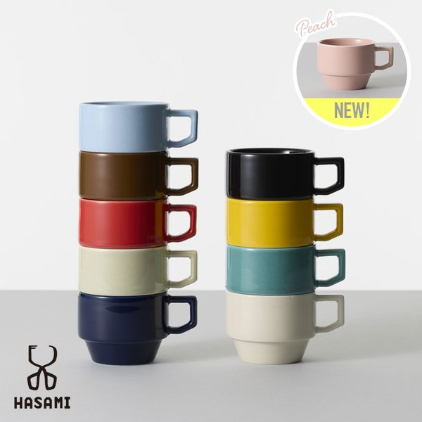

【2026年・食器】和食器・北欧食器でおうちごはんが映える器10選｜イッタラ ティーマ・アラビア ルノ・マリメッコ ウニッコ・白山陶器 平茶碗・KINTO FOG・amabro・コレス・ロイヤルコペンハーゲン・青郊窯・HASAMIを実売価格で比較
毎日の食卓を変えるのは、料理より器かもしれません。同じ焼き魚でも、白い平皿に乗せるのと、染付の小皿に乗せるのとでは、箸を伸ばす気持ちが変わります。和食器と北欧食器を混ぜると、肩の力が抜けた食卓になります。
選ぶ軸は3つです。まず使う場面。毎日使う飯碗とマグは、電子レンジと食洗機に対応しているかを確認します。次に揃え方。1客ずつ買い足せる定番シリーズなら、割れたときに困りません。最後に和と洋のバランス。和食器6割・北欧食器4割くらいにすると、献立を選ばずに使えます。なお、レビュー件数が50件に満たない商品は記事内に実数を明記しています。
本記事では、楽天市場で人気・高評価の和食器・北欧食器10選を、実売価格とレビュー評価つきで写真付き紹介します。
- おすすめ10選 スペック・特徴比較表
- BEST 1｜イッタラ ティーマ マグカップ 300ml（ホワイト）
- BEST 2｜アラビア ルノ プレート 16.5cm（フロストベリー）
- BEST 3｜マリメッコ ウニッコ マグカップ 250ml
- BEST 4｜白山陶器 平茶碗 2個セット（波佐見焼）
- BEST 5｜KINTO FOG マグ 270ml
- BEST 6｜amabro DAYS OF KURAWANKA ランチプレート（波佐見焼）
- BEST 7｜コレス キキマグ（日本製・磁器）
- BEST 8｜ロイヤルコペンハーゲン ブルーパルメッテ オーバルディッシュ S 23×14cm
- BEST 9｜九谷焼 縁起カップ 吉祥（青郊窯）
- BEST 10｜HASAMI ブロックマグ 200ml（マルヒロ・波佐見焼）
- 【読者負担0円】買わなくても得する無料サービス
- まとめ：和食器・北欧食器10選の選び方
| 順位 | 商品名 | ブランド | 最大の特徴・おすすめ理由 | 総合評価 |
|---|---|---|---|---|
| BEST 1 | イッタラ ティーマ マグカップ 300ml（ホワイト） | イッタラ（IITTALA） | 毎日使える300ml | 4.69 |
| BEST 2 | アラビア ルノ プレート 16.5cm（フロストベリー） | アラビア（ARABIA） | 取り皿にもケーキ皿にも使える | 4.94 |
| BEST 3 | マリメッコ ウニッコ マグカップ 250ml | マリメッコ（marimekko） | 250mlでコーヒーも紅茶も入る | 4.62 |
| BEST 4 | 白山陶器 平茶碗 2個セット（波佐見焼） | 白山陶器（HAKUSAN） | ごはんがふっくら盛れる形 | 4.83 |
| BEST 5 | KINTO FOG マグ 270ml | KINTO（キントー） | マットな質感で指あたりが良い | 4.81 |
| BEST 6 | amabro DAYS OF KURAWANKA ランチプレート（波佐見焼） | amabro（アマブロ） | 仕切り付きで1皿に盛れる | 4.57 |
| BEST 7 | コレス キキマグ（日本製・磁器） | コレス（cores） | 日本製の磁器で毎日使える | 4.71 |
| BEST 8 | ロイヤルコペンハーゲン ブルーパルメッテ オーバルディッシュ S 23×14cm | ロイヤルコペンハーゲン（Royal Copenhagen） | 手描きのブルーが食卓を引き締める | 4.71 |
| BEST 9 | 九谷焼 縁起カップ 吉祥（青郊窯） | 青郊窯（九谷焼） | そばちょこにも湯呑にも使える | 4.93 |
| BEST 10 | HASAMI ブロックマグ 200ml（マルヒロ・波佐見焼） | HASAMI（ハサミ） | 重ねて収納できる | 4.94 |
イッタラ ティーマ マグカップ 300ml（ホワイト）

イッタラのティーマは、フィンランドで生まれた定番のマグカップです。継ぎ目のない円筒形で、300ml入るコーヒーカップ。電子レンジにも食洗機にも対応し、色違いを揃えても食卓でぶつかりません。朝のコーヒーから夜の白湯まで、毎日使う一杯に向きます。楽天市場での実売価格は約2,099円（2026年11月時点）。
- 毎日使える300ml
- レンジ・食洗機に対応
- 色違いで揃えやすい形
- レビュー893件。海外製のため、釉薬の表情には個体差がある
アラビア ルノ プレート 16.5cm（フロストベリー）

アラビアのルノは、フィンランドの森の実を描いたシリーズです。16.5cmのプレートは、ケーキ皿にも取り皿にも使える中間サイズ。落ち着いた色のベリー柄で、和食の煮物や和菓子を乗せても浮きません。楽天市場での実売価格は約3,900円（2026年11月時点）。
- 取り皿にもケーキ皿にも使える
- 和食にも合う落ち着いた柄
- シリーズで揃えられる
- レビュー629件。柄の位置は1枚ずつ異なる
マリメッコ ウニッコ マグカップ 250ml

マリメッコのウニッコは、ケシの花をモチーフにした定番柄です。250mlのマグは、コーヒーにも紅茶にも足りる大きさ。色違いを並べると食卓が明るくなるので、来客用の一杯にも使えます。楽天市場での実売価格は約2,653円（2026年11月時点）。
- 250mlでコーヒーも紅茶も入る
- 定番柄で長く使える
- 色違いで並べると映える
- レビュー124件。柄物のため、色によっては在庫が限られる
白山陶器 平茶碗 2個セット（波佐見焼）

白山陶器の平茶碗は、波佐見焼のロングセラーです。口が広く浅い形で、ごはんがふんわり盛れて美味しそうに見えます。2個セットで家族の茶碗を揃えられ、電子レンジにも対応します。楽天市場での実売価格は約7,260円（2026年11月時点）。
- ごはんがふっくら盛れる形
- レンジ対応で温め直しもできる
- 2個セットで揃う
- レビュー102件。浅いぶん、丼ものには容量が足りない
KINTO FOG マグ 270ml

KINTOのFOGは、霧のようなマットな質感のマグです。270mlで、手になじむ丸みのある形。色は落ち着いたトーンで、和食器の隣に置いても北欧食器の隣に置いてもなじみます。楽天市場での実売価格は約1,540円（2026年11月時点）。
- マットな質感で指あたりが良い
- 270mlで日常使いしやすい
- 和洋どちらの器にも合う
- レビュー96件。マット仕上げは、研磨スポンジでこすると傷が付く
amabro DAYS OF KURAWANKA ランチプレート（波佐見焼）

amabroのワンプレートは、仕切りがある波佐見焼の皿です。ごはんとおかずを1枚に盛れて、洗い物が減ります。4色から選べ、時短の昼食にも、子どもの取り分けにも使えます。楽天市場での実売価格は約3,080円（2026年11月時点）。
- 仕切り付きで1皿に盛れる
- 洗い物が1枚で済む
- 4色から選べる
- レビュー86件。仕切りの高さが低く、汁気の多いおかずは向かない
コレス キキマグ（日本製・磁器）

コレスのキキマグは、日本製の磁器マグです。ぽってりとした形で、コーヒーカップとしてもティーカップとしても使えます。電子レンジと食洗機に対応し、毎日気兼ねなく使えるのが利点です。楽天市場での実売価格は約2,750円（2026年11月時点）。
- 日本製の磁器で毎日使える
- レンジ・食洗機に対応
- コーヒーにも紅茶にも合う
- レビュー58件。色によって入荷が不安定なことがある
ロイヤルコペンハーゲン ブルーパルメッテ オーバルディッシュ S 23×14cm

ロイヤルコペンハーゲンのブルーパルメッテは、手描きのブルーの線が特徴の定番シリーズです。23×14cmの楕円皿は、和菓子を2つ乗せても余白が残る大きさ。来客の茶菓子皿や、ちょっとしたハレの日に使えます。楽天市場での実売価格は約8,860円（2026年11月時点）。
- 手描きのブルーが食卓を引き締める
- 楕円で和菓子も洋菓子も映える
- 結婚祝いの贈り物にも使える
- レビュー56件。1枚ずつ手描きのため、価格は高め
九谷焼 縁起カップ 吉祥（青郊窯）

青郊窯の縁起カップは、九谷焼の彩色で仕上げたフリーカップです。そばちょこにも湯呑にも使える手のひらサイズで、縁起の良い文様が入ります。来客の一杯や、ちょっとした贈り物にも向きます。楽天市場での実売価格は約2,530円（2026年11月時点）。
- そばちょこにも湯呑にも使える
- 九谷焼の彩色が華やか
- 縁起物として贈り物にも
- レビュー44件と50件未満。手描きのため、文様の入り方は1客ずつ異なる
HASAMI ブロックマグ 200ml（マルヒロ・波佐見焼）

HASAMIのブロックマグは、波佐見焼の積み重ねできるマグです。200mlと小さめで、色を変えて重ねると棚に収まりよく並びます。10色から選べ、家族それぞれの色を決めるのも楽しい器です。楽天市場での実売価格は約2,200円（2026年11月時点）。
- 重ねて収納できる
- 10色から選べる
- 小さめで子どもにも持たせやすい
- レビュー35件と50件未満。200mlなので、たっぷり飲む人には一回り小さい
この記事の商品を買う前に、まずは無料で得する選択肢をチェック。どれも登録・利用は0円で、無料期間中に解約すれば料金はかかりません。読みたい雑誌がある人、ポイントを貯めたい人、アンケートなら気軽という人、それぞれに合うものを選べます。
初回31日無料・無料期間中に解約すれば0円 → 楽天ポイントモール｜登録無料で毎日ポイ活
買い物なしでもポイントが貯まる無料サービス → 楽天インサイト｜アンケートに答えてポイント
登録無料・すきま時間のアンケートで貯まる → 楽天カード｜年会費永年無料
新規発行・年会費ずっと0円 →
4つのサービスの違いと使い分けは「出費0円で得する！買わずにポイントが貯まる無料サービス厳選4選」でまとめています。
💡 まとめ：和食器・北欧食器10選の選び方
食器は、毎日使うものから揃えると食卓が変わります。まずはイッタラのティーマ マグと、白山陶器の平茶碗。この2つで朝ごはんと夜ごはんの土台ができます。次にKINTOのFOGマグかコレスのキキマグを色違いで足し、取り皿はアラビアのルノ プレートを。ワンプレートの日はamabroのランチプレート、来客の一杯には青郊窯の九谷焼 縁起カップ、茶菓子にはロイヤルコペンハーゲンのブルーパルメッテを出すと、卓上が締まります。小さめのマグを揃えたいならHASAMIのブロックマグ、色違いで家族のぶんを決めると片付けも早くなります。まずはマグを1つ、手持ちの器に足すところから始めてみてください。
楽天市場では「5と0のつく日」や「お買い物マラソン」などのキャンペーンに合わせて購入すると、ポイント還元が最大化してお得に手に入ります。ぜひチェックしてみてくださいね。